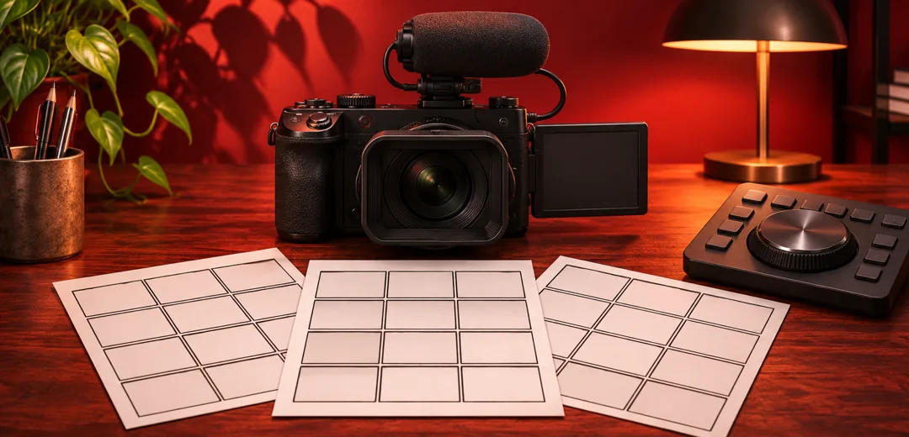
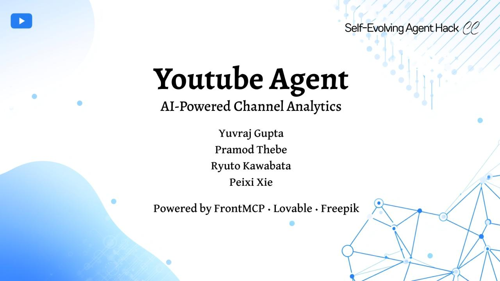

Creator tools
YouTube Agent
An assistant that helps creators research similar channels and turn what they learn into video ideas, drafts and thumbnails.

Find channels Analyze videos Draft content
From channel research to a draft
A creator can look for channels covering a topic, compare how often they publish and examine the titles and thumbnails they use. The agent can use those observations to suggest an angle for a new video and draft a title or script.


How the tools connect
A Google ADK agent calls research and generation tools through a FrontMCP server. The web interface shows tool results as they arrive. Our team won first place in Frontegg’s sponsor category for its use of FrontMCP.